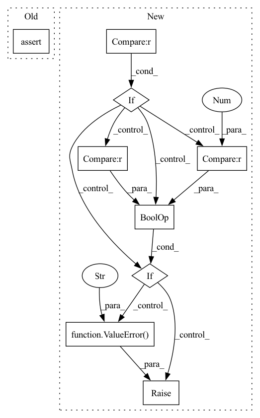

Pattern ID :1036

Before Change
self.out_format = out_format
assert 1 <= self.mfcc_order and self.mfcc_order < n_channel
assert is_in(self.out_format, ["y", "yE", "yc", "y,E", "y,c"])
self.fbank = MelFilterBankAnalysis(
n_channel, fft_length, sample_rate, out_format="y,E", **fbank_kwargs
After Change
assert 1 <= self.mfcc_order and self.mfcc_order < n_channel
if out_format == 0 or out_format == "y":
self.format_func = lambda y, c, E: y
elif out_format == 1 or out_format == "yE":
self.format_func = lambda y, c, E: torch.cat((y, E), dim=-1)
elif out_format == 2 or out_format == "yc":
self.format_func = lambda y, c, E: torch.cat((y, c), dim=-1)
elif out_format == 3 or out_format == "ycE":
self.format_func = lambda y, c, E: torch.cat((y, c, E), dim=-1)
else:
raise ValueError(f"out_format {out_format} is not supported")
self.fbank = MelFilterBankAnalysis(
n_channel, fft_length, sample_rate, out_format="y,E", **fbank_kwargs
)
In pattern: SUPERPATTERN
Frequency: 3
Non-data size: 9
Instances
Fragment ID: 5091657
Project Name: sp-nitech/diffsptk
Commit Name: 33b30598598193c840ee1aac6522adba1b8ff04d
Time: 2022-04-12
Author: takenori.yoshimura24@gmail.com
File Name: diffsptk/core/mfcc.py
M Class Name: MelFrequencyCepstralCoefficientsAnalysis
N Class Name: MelFrequencyCepstralCoefficientsAnalysis
M Method Name: __init__(7)
N Method Name: __init__(7)
M Parent Class: nn.Module
N Parent Class: nn.Module
M File Name: diffsptk/core/mfcc.py
N File Name: diffsptk/core/mfcc.py
M Start Line: 76
M End Line: 79
N Start Line: 77
N End Line: 88
'>
Before Change
if required_arg == "img_shape":
self.img_h, self.img_w, self.img_c = self.img_shape
elif required_arg == "tensor_value_range":
assert isinstance(self.tensor_value_range, list) or isinstance(self.tensor_value_range, tuple)
assert len(self.tensor_value_range) == 2
// set optional parameters
After Change
// set required parameters
self.device = device
for required_arg in self.REQUIRED_ARGS:
if required_arg not in model_args.keys():
raise ValueError(f"model {self.NAME} requires parameter "{required_arg}"")
required_val = model_args[required_arg]
// pre-setattr checks
if required_arg == "tensor_value_range":
if type(required_val) not in [tuple, list] or len(required_val) != 2:
raise ValueError("value for argument "tensor_value_range" needs to be tuple or list with 2 elems")
// set parameter
setattr(self, required_arg, required_val)
'>
Fragment ID: 5091656
Project Name: ais-bonn/vp-suite
Commit Name: 1c3571da20cb42bd260e26e5b031db6a79be0108
Time: 2022-01-21
Author: boltres@ais.uni-bonn.de
File Name: vp_suite/base/base_model.py
M Class Name: VideoPredictionModel
N Class Name: VideoPredictionModel
M Method Name: __init__(2)
N Method Name: __init__(2)
M Parent Class: nn.Module
N Parent Class: nn.Module
M File Name: vp_suite/base/base_model.py
N File Name: vp_suite/base/base_model.py
M Start Line: 34
M End Line: 41
N Start Line: 34
N End Line: 45
'>
Before Change
assert 0 <= f_min and f_min < f_max
assert f_max <= sample_rate / 2
assert 0 < self.floor
assert is_in(self.out_format, ["y", "E", "yE", "y,E"])
lower_bin_index = max(1, int(f_min / sample_rate * fft_length + 1.5))
upper_bin_index = min(
After Change
assert f_max <= sample_rate / 2
assert 0 < self.floor
if out_format == 0 or out_format == "y":
self.format_func = lambda y, E: y
elif out_format == 1 or out_format == "yE":
self.format_func = lambda y, E: torch.cat((y, E), dim=-1)
elif out_format == 2 or out_format == "y,E":
self.format_func = lambda y, E: (y, E)
else:
raise ValueError(f"out_format {out_format} is not supported")
lower_bin_index = max(1, int(f_min / sample_rate * fft_length + 1.5))
upper_bin_index = min(
fft_length // 2, int(f_max / sample_rate * fft_length + 0.5)
'>
Fragment ID: 5091589
Project Name: sp-nitech/diffsptk
Commit Name: 33b30598598193c840ee1aac6522adba1b8ff04d
Time: 2022-04-12
Author: takenori.yoshimura24@gmail.com
File Name: diffsptk/core/fbank.py
M Class Name: MelFilterBankAnalysis
N Class Name: MelFilterBankAnalysis
M Method Name: __init__(8)
N Method Name: __init__(8)
M Parent Class: nn.Module
N Parent Class: nn.Module
M File Name: diffsptk/core/fbank.py
N File Name: diffsptk/core/fbank.py
M Start Line: 88
M End Line: 88
N Start Line: 88
N End Line: 97